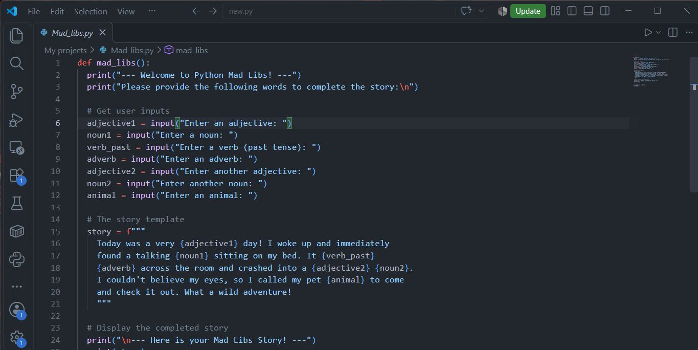
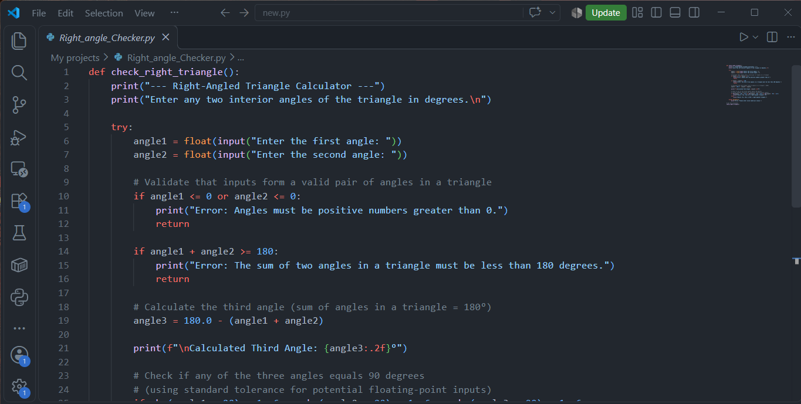
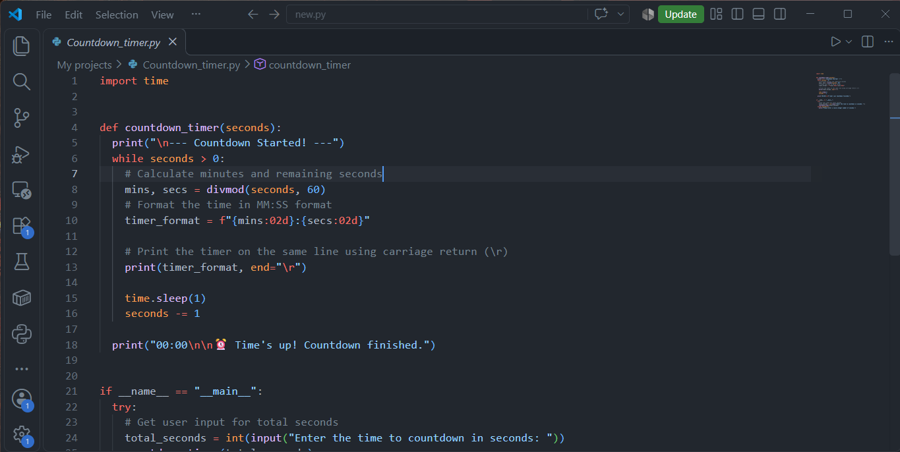

Featured Projects

Mad Libs project
A classic project where the script prompts user for inputs and inserts them in a pre-written story template to create a humurous result.
View Repository →

Countdown Timer
A project that takes a value representing seconds and decrements second-by-second zero.
View Repository →